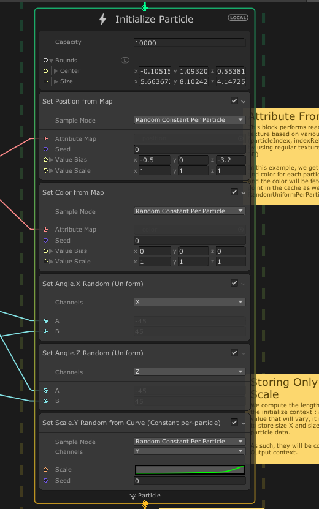
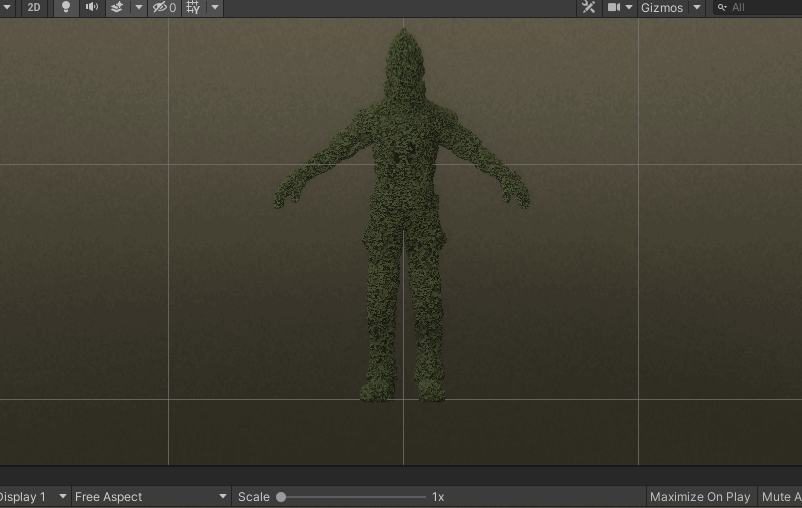

Unity 官方示例分析与重做·MorphingFace
分析过程
- 拖动vfx对象，粒子跟随vfx对象===>粒子使用local mode来模拟
- 粒子有两个状态：状态1，粒子齐整 颜色偏黄，大小 状态2，粒子散乱，颜色黑褐色 大小变化
- 粒子的状态切换根据周期性变动的水平线 变化，在线之下的粒子呈现状态1，线之上的粒子呈现状态2
- 粒子没有位置变动，有大小，朝向，颜色的变化
- 粒子没有闪烁，没有看见明显的销毁的效果
- 粒子为基本的cube

原Graph的分析
原Graph的结构比较简单，但是使用了point cloud，在新的版本中可以考虑使用mesh sample来实现。
initialize context部分

其中颜色与位置都是从Point Cache中读取，设置了随机的角度，以及随机y方向缩放
因为没有每帧做的变化，Update Context内容为空。
output部分的设置,disable的部分为实际没有起到作用的部分。

这里要注意 output的设置并不会更改整个system的粒子状态，每次渲染都会从system的属性跟当前设置进行计算，然后产生新的数据副本，进行渲染，这也是为什么一个system可以连接多个output的情况。
重做
因为我们并没有Face的原模型，所以使用了一个新的模型 Ethan（来自standard Assets/Characters）
导入时设置read/write为true

采样选择 从surface处采样，并且coordinates设置为Barycentric（ x y z和为1 z由1-x-y 求得，x y都大于0）

采样的数据有position，Texcoord0

其中uv信息从base texture上采样颜色
调整
注意到替换模型之后，模型大小发生了变化 因此要调整Y轴的范围以及boundbox的信息
相对比较简单的做法是 设置一个AABox 然后将其连接到Initialize Context的boundbox上
然后在Scene中编辑调整


依据坐标y的动画调整模块的节点调整如下：
注意里面写的常量就要跟AABox的参数关联起来了

最终的效果如下
